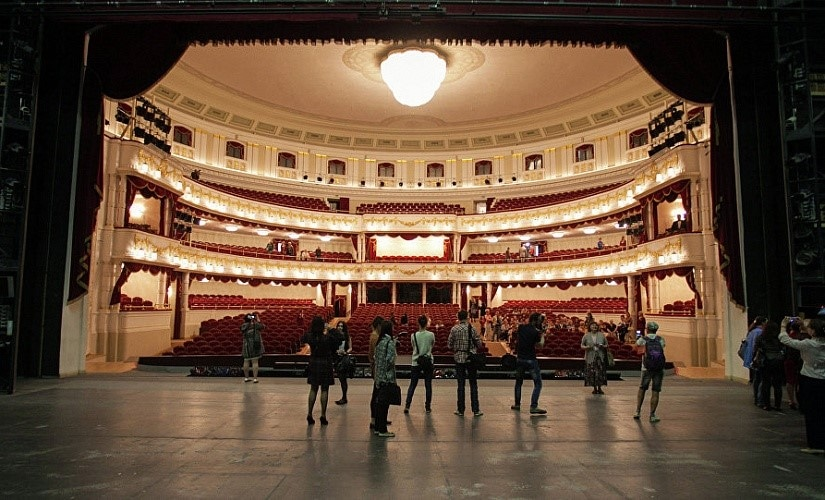
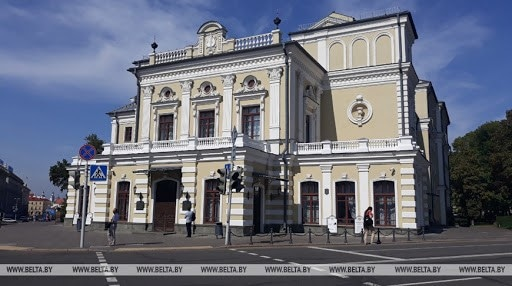

Культурная жизнь Минска: гайд по тому, как развить себя духовно в столице

Переезжая в Минск многое начинает играть другими красками: сотни улочек, которые наполнены новомодными граффити и уютными кофейнями, музеи, галереи, театры, кино. Столько всего!
Чтобы вам было проще, я сделала культурный гайд по Минску. Эти места —маст-хэв для посещения.
Театры
-
Национальный академический театр оперы и балета. Если вы никогда не бывали в театре, то лучше всего будет начать с этого места. Опера или балет — выбирать вам, но для начинающего я бы советовала классику: балет П. Чайковского «Щелкунчик», опера Дж. Пуччини «Богема», балет С. Прокофьева «Ромео и Джульетта». Знакомые сюжеты будет проще распознать и смотреть в удовольствие. А бело-золотой интерьер с мрамором вокруг и шикарными жирандолями даст возможность ощутить себя в настоящем храме искусства и красоты.
За кулисами в Большом. Фото: «Tobelarus.by»
-
Национальный академический театр имени Янки Купалы. Пожалуй, самое исторически-наполненное здание Минска. В 1917 году в здании Минского городского театра проходил Второй съезд армий Западного фронта. В том же году в здании прошёл Первый Всебелорусский съезд, в феврале 1919 года — Первый Всебелорусский съезд Советов, в июне 1944 года — Второй Всебелорусский съезд. В 1944 году был переименован в честь классика белорусской литературы, поэта Янки Купалы. В марте 2013 года театр открылся после реконструкции.
Куда ж без колоритных белорусских постановок? Знаменитая «Паўлінка» Янки Купалы, спектакль «Вечар», «Дзве душы», «Пан Тадэуш» — классика белорусской драматургии. Оригинально, самобытно, характерно.
Национальный академический театр имени Янки Купалы. Фото: «Belta.by»
Не хочу растягивать свой театральный список, но не могу не упомянуть Республиканский театр белорусской драматургии, Музыкальный театр, театр кукол, театр имени Горького, Молодёжный театр, театр красной армии и театр юного зрителя, а также свободное пространство Ок16. Большой выбор, будет что посмотреть хоть каждый день.
Что с кино?
Вот тут полный рог изобилия: на 2019 год в Минске работают 22 кинотеатра, включая 13 кинотеатров с 24 залами, подконтрольных государственной структуре УП «Киновидеопрокат Мингорисполкома». Кинотеатры находятся в любом районе Минска, так что не придётся ехать в другой конец города, чтобы увидеть любимую кинокартину. Все кинотеатры в столице являются цифровыми. Популярна также частная сетка кинотеатров ''Silverscreen”, которая располагается в торговых центрах, а также “Falcon club” и кинокомнаты.
Часто кино можно посмотреть в кофейнях, свободных пространствах, галереях, причем бесплатно. Маленький совет: чтобы быть в курсе самого интересного, подпишитесь на разные паблики (как пример, «Бесплатный Минск») и на инстаграмы минских заведений.
Кинотеатр «Победа». Фото «Sb.by»
Галереи и музеи
Первый в списке, конечно же, Национальный художественный музей Республики Беларусь. Аутентичный храм искусства, подлинные картины и вдохновение, царящее вокруг. Для студентов вход на основную экспозицию стоит два рубля. Дешевле, чем чашка кофе.
Национальный художественный музей Республики Беларусь.Фото: «Tut.by»
Мемориальный музей-мастерская З.И. Азгура. Окунаясь в зал, полный скульптур, можно прожить судьбы выкованных особ. Они везде, словно призраки ушедших столетий. Вход тоже в районе трёх рублей. Музей снаружи может показаться маленьким и несуразным, но то, что внутри, поразит вас. Даю гарантию.
Из личного архива
Проезжая Стелу «Минск — город-герой», загляните в музей истории Великой Отечественной войны. Тут даже слова не нужны, но это правда стоит вашего времени. Почтить память, в очередной раз восхититься храбростью героев, просмотреть войну глазами современника.
Музей истории Великой Отечественной войны. Фото: «Museums.by»
Галерея «Арт-Беларусь» на Козлова 3. Здесь постоянно выставляются молодые художники, дизайнеры, скульпторы. Это что-то вроде выставки-распродажи: любое понравившееся искусство можно приобрести к себе в коллекцию. Также советую к посещению.
Галерея «Арт-Беларусь». Фото: «Tripadvisor.by»
В Минске есть музей белорусской истории, музей Янки Купалы, белорусского кино, архитектуры и быта, театральной и музыкальной культуры, первого съезда РСДРП и даже музей утюга!! Ну и многое другое, конечно же. В общем, все, что душе угодно. Выставки постоянно обновляются, так что придя второй раз, вы точно не увидите то, что лицезрели впервые.
Кофейни
Вот тут можно еще больше разгуляться. На вкус и цвет: любой интерьер, кофе, бариста, местоположение, стиль, характерность кофейни. К сожалению, чтобы их все обойти, нужна далеко не одна стипендия и вовсе не один год. Каждый месяц открывается что-нибудь новое, интересное. Минские любимчики: «26», «Sorso di Espresso», «Зерно», «Moby Dick», «Культура», «Surf Coffee», «Took».
Кофейня «Took». Фото: «Яндекс карты»
Граффити
Это как большое открытие. Идёшь по улочке и тут натыкаешься на граффити, рассматриваешь его, фотографируешь и надолго оставляешь в памяти. Уличное искусство процветает и в белорусской столице.
В Минске проводится фестиваль граффити Vulica Brasil. В последние годы в Минске проводятся фестивали граффити, в рамках которым отдельные здания города отдаются на "растерзание" местным и приглашенным иностранным художникам. Официальные мероприятия, в рамках которых на стенах минских зданий появились масштабные граффити, начались с фестиваля Vulica Brasil 2014. В этом фестивале участвуют белорусские и бразильские художники стрит-арта.
Храм граффити — улица Октябрьская. Также интересные стрит-объекты можно найти на Немиге, Свердлова, Кирова, Энгельса, Карла Маркса, Рабкоровской, Кальварийской, Революционной и др.
Красный дворик, ул. Революционная 7. Фото: «Lookmytrips.com»
Культурные пространства
Тренд на ревитализацию, то есть переосмысление индустриальных городских территорий, добрался и до Минска. Старые заброшенные заводы обретают новую жизнь благодаря креативу минчан. Самый яркий пример- улица Октябрьская, которая является самой молодёжной, с ярко-выраженной индивидуальностью города.
Улица Октябрьская. Фото: “Onliner.by”
Также популярен культурный центр «Корпус». «Корпус» проводит концерты, выставки, маркеты, фестивали, лекции и кинопросмотры.
«Корпус». Фото: «Timesbntu.by»
Летом открывается «Песочница» -излюбленное место фудхантеров. «Песочница» – настоящий гастрорай и фотозона, которая открывается на летний сезон. Во дворе оставили могучие заводские конструкции, под высоченной металлической крышей организовали пространство для мероприятий со сценой и экраном, расставили деревянные поддоны вместо стульев и бочки вместо столов, а стены доверили художникам. 15+ фудтраков, которые разборсаны по территории «Песочницы», готовят примерно любую уличную еду – от привычных бургеров до хитрых азиатских закусок.
«Песочница». Фото: «Tut.by»
Минск развивается, растёт духовно с каждым днём. Больше креативных и инициативных белорусов = больше прекрасных мест, которые стоит посетить. Город — есть искусство. Люди — его строители.
Хочу закончить статью цитатой Бориса Акунина для вдохновения и раздумья: «Оказывается, есть и такое наслажденье — брести по пустым улицам наугад, не зная пути. Чужой, непонятный город. Чужая, непонятная жизнь. Зато настоящая. Самая что ни на есть».
Материал подготовила Вероника Цеханович
19.11.2020